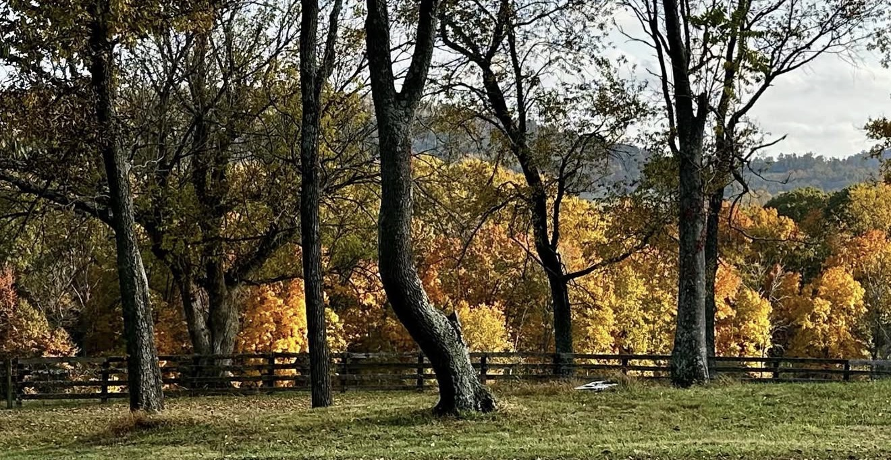

Planting 500 million trees across Europe, one citizen at a time.

Life Terra Foundation, established in 2019 and based in Amsterdam, with offices in Barcelona and Brussels. It began as an EU LIFE Programme project and is now a Public Benefit Organization active in more than 30 European countries.
Community-based tree planting paired with an app and monitoring technology that registers every tree and tracks its growth. They run large professional plantings, local volunteer events, school climate education, and corporate tree-adoption programs.
Active since 2019. They have planted over 36 million trees with more than 125,000 participants and 14,000 classrooms, capturing an estimated 563,000 tonnes of CO2.
Across Europe — from the Netherlands and Spain to Eastern Europe — with planting partners committed to maintaining trees for at least 40 years to maximize carbon capture and biodiversity.
Europe needs massive reforestation to meet climate targets, and trees only deliver if they survive. Monitoring plus long-term landowner commitment turns planting events into permanent forests.
The foundation's model combines immediate citizen action with decades-long stewardship. Donations go directly to reforestation, education, and the technology that makes every tree countable and visible.